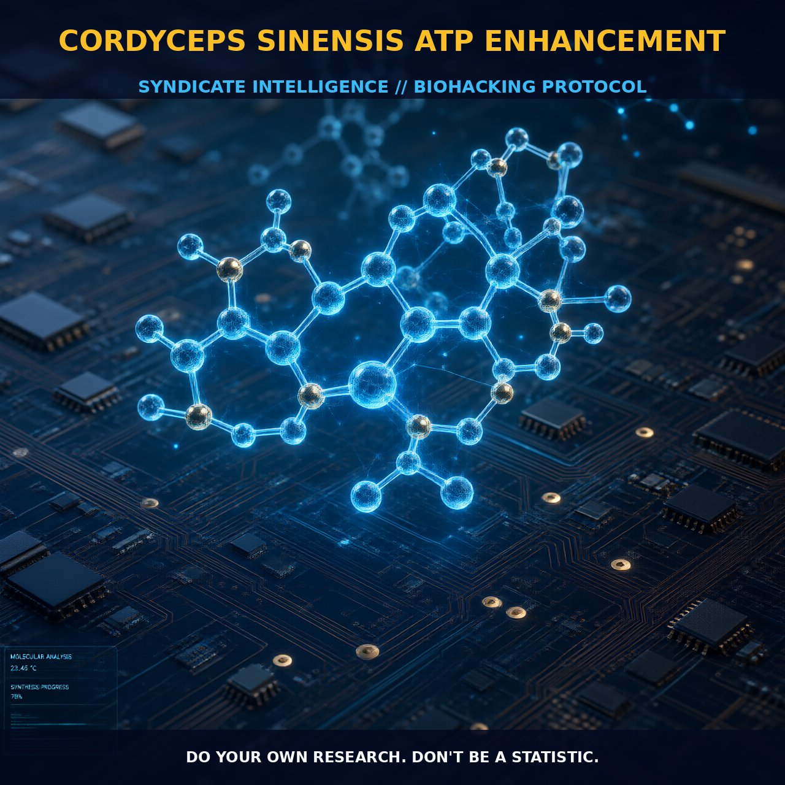

Enhancing ATP Production with Cordyceps Sinensis

1. The Mechanism
Cordyceps sinensis, a fungus traditionally used in Chinese medicine, has garnered attention for its potential to enhance ATP production in cells. ATP, the primary energy currency in cells, is crucial for maintaining cellular function through efficient production and recycling. Cordyceps sinensis exerts its effects primarily through the activation of the AMP-activated protein kinase (AMPK) signaling pathway. This pathway is pivotal in regulating cellular energy homeostasis by sensing energy levels and modulating metabolism accordingly. When ATP levels are low, AMPK is activated, promoting ATP production and increasing cellular energy efficiency.
Cordyceps sinensis contains cordycepin, a bioactive compound that activates AMPK, thereby enhancing ATP production. Cordycepin also modulates other signaling pathways, such as mTOR and SIRT1, which further support energy metabolism and cellular longevity. By activating AMPK, cordycepin promotes the recycling of ADP to ATP, a critical process for maintaining cellular energy balance. This mechanism ensures a steady supply of energy for various cellular processes.
The activation of the AMPK pathway by cordycepin not only enhances ATP production but also modulates oxidative phosphorylation. AMPK activation leads to an increase in the activity of enzymes involved in the citric acid cycle and the electron transport chain, key components of oxidative phosphorylation. This enhances the efficiency of ATP production in the mitochondria, the primary site of ATP synthesis. Additionally, cordycepin upregulates the expression of genes involved in fatty acid oxidation, further contributing to the cellular energy supply. The AMPK pathway, when activated by cordycepin, also promotes autophagy, the process that removes damaged organelles and proteins, supporting cellular health and longevity.
2. Biological Leverage
Cordyceps sinensis, through the activation of the AMPK pathway, provides significant biological leverage in enhancing cellular energy production and utilization. The AMPK pathway, a master regulator of cellular metabolism, has a wide range of beneficial effects when activated by cordycepin. One of the primary benefits is the enhancement of ATP production, critical for maintaining cellular function and viability. ATP is essential for various cellular processes, including active transport, cell movement, anabolism, and physiological functions. By increasing ATP production, cordycepin supports these fundamental cellular activities, leading to improved overall cellular health and resilience.
Moreover, the activation of AMPK by cordycepin promotes cellular longevity by enhancing ATP recycling. AMPK activation increases the activity of enzymes involved in the citric acid cycle and the electron transport chain, key pathways for ATP production in the mitochondria. This enhancement of mitochondrial function not only increases ATP production but also supports cellular energy homeostasis, particularly under metabolic stress. The upregulation of genes involved in fatty acid oxidation further contributes to the cellular energy supply, providing a more robust and versatile energy production system.
Additionally, cordycepin's activation of the AMPK pathway promotes autophagy, essential for maintaining cellular health by removing damaged organelles and proteins. By enhancing autophagy, cordycepin supports the removal of dysfunctional mitochondria and other cellular components, thereby promoting cellular longevity and resilience. This biological leverage extends to various physiological conditions, such as hepatic steatosis, inflammation, and fibrosis, where cordycepin has shown promise in modulating these conditions through AMPK activation.
3. Protocol Implementation
To effectively implement cordycepin in your biohacking routine, consider the dosage and timing of administration. Human dosing for cordycepin is not well established, but typical dosages used in studies range from low-to-moderate amounts, suggesting a starting point of around 50-200 milligrams per day. It is advisable to begin with lower doses and gradually increase to assess individual tolerance and response. Cordycepin can be taken as a standalone supplement or stacked with other compounds to enhance its effects.
For instance, combining cordycepin with ubiquinone (CoQ10) can support mitochondrial function and ATP production, as ubiquinone acts as a contributor to the electron transport chain. Similarly, stacking with MCTs (medium-chain triglycerides) can increase the availability of ketones, providing an alternative energy source for the brain and enhancing cognitive function. Timing of administration is also important. Taking cordycepin in the morning can help support energy levels throughout the day, while evening doses may support cellular repair and recovery during sleep.
It is beneficial to take cordycepin with meals to enhance its absorption. For optimal results, consider incorporating cordycepin into a comprehensive biohacking regimen that includes other energy-boosting compounds such as creatine, caffeine, and adaptogens like rhodiola or ashwagandha. These compounds can complement the effects of cordycepin by supporting cellular energy production and stress resilience.
Prostar Life Hack
Begin with a low dose of cordycepin (50-100 mg/day) and gradually increase to assess individual tolerance and response. Combine cordycepin with ubiquinone (CoQ10) for enhanced mitochondrial function and ATP production. Take cordycepin with meals for better absorption.
[ AUTHOR: LEAD TECHNICAL RESEARCHER ]